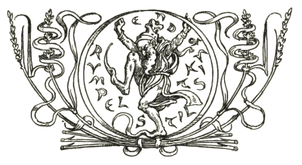

Brothers Grimm Rumpelstiltskin A folktale digitised by Benn Pearson  First published in 1812 Illustrated by Walter Crane, H. J. Ford, John B. Gruelle, Arthur Rackham, Charles Robinson and A. H. Watson